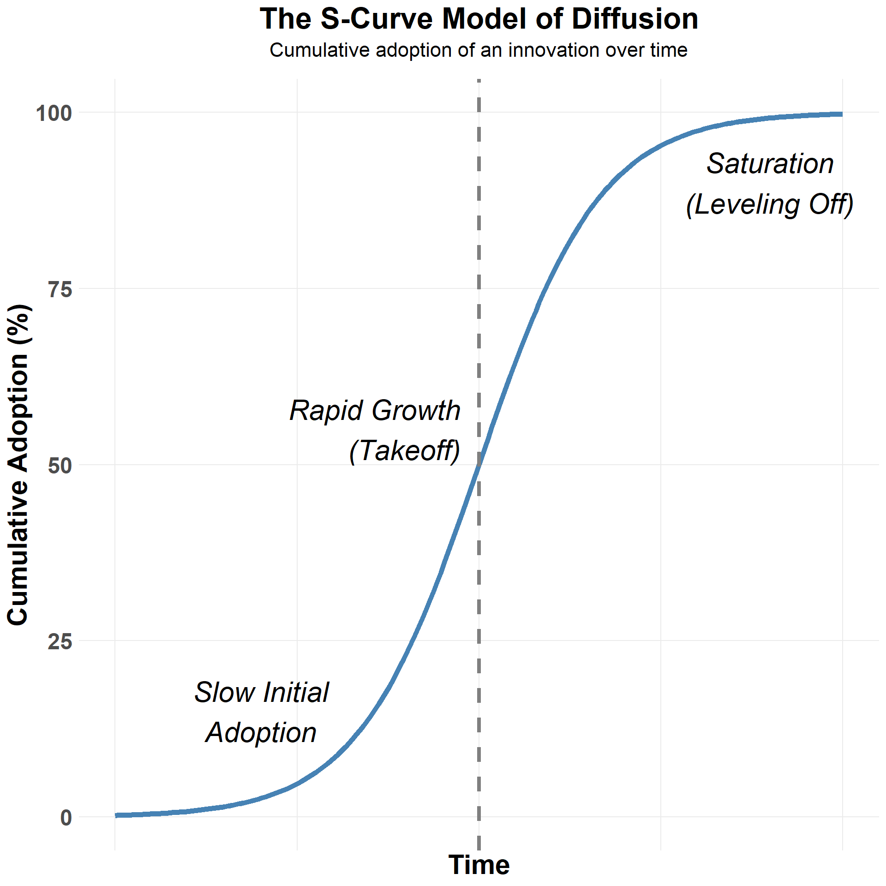
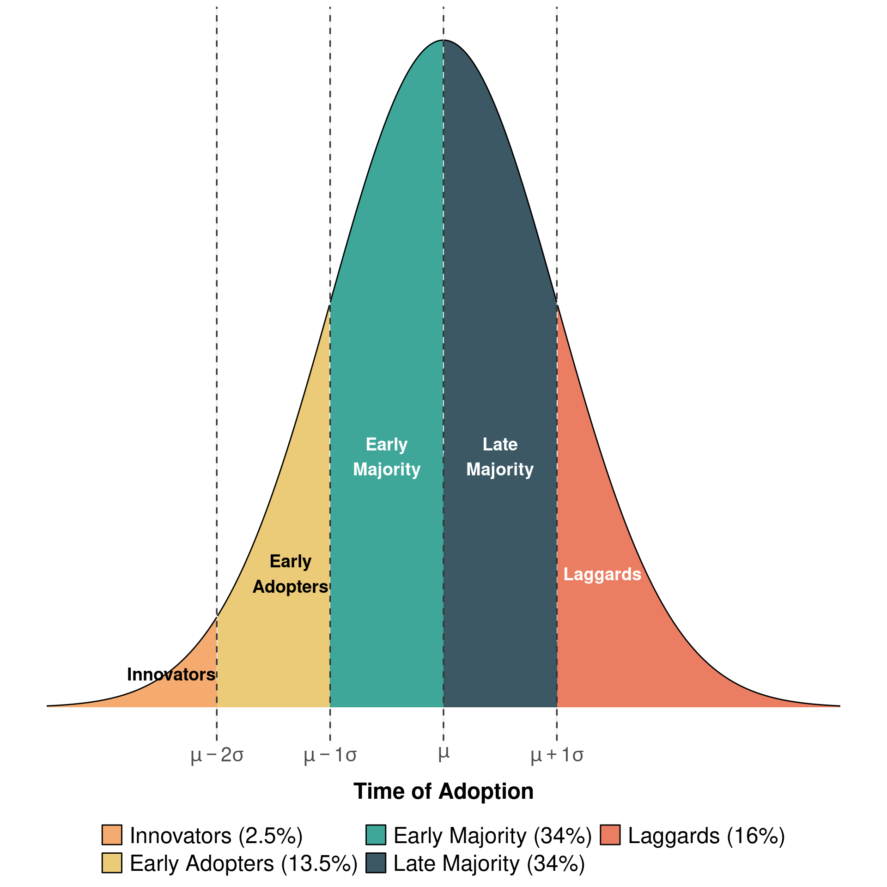
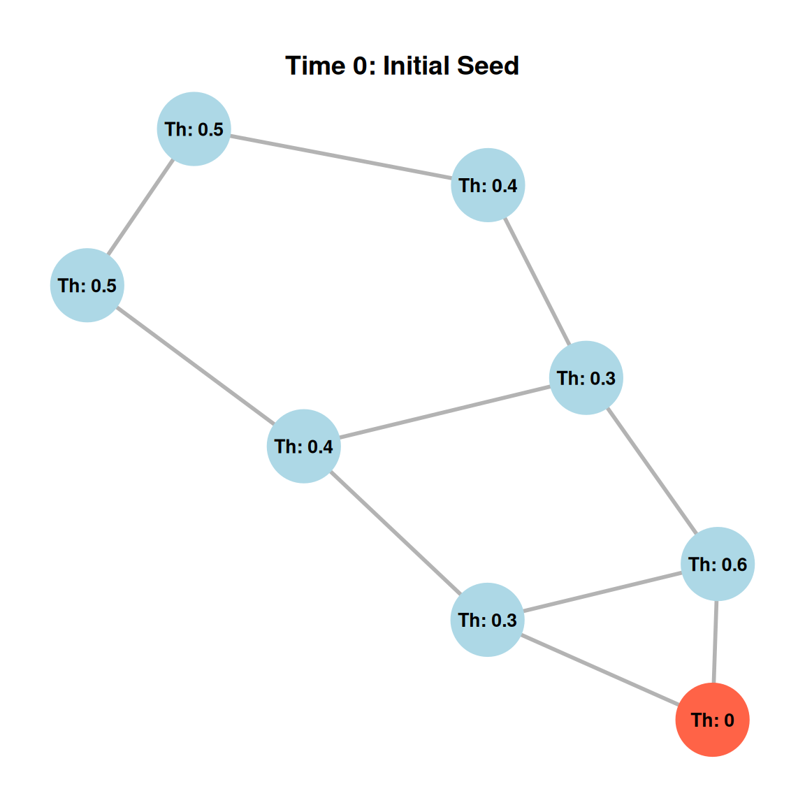
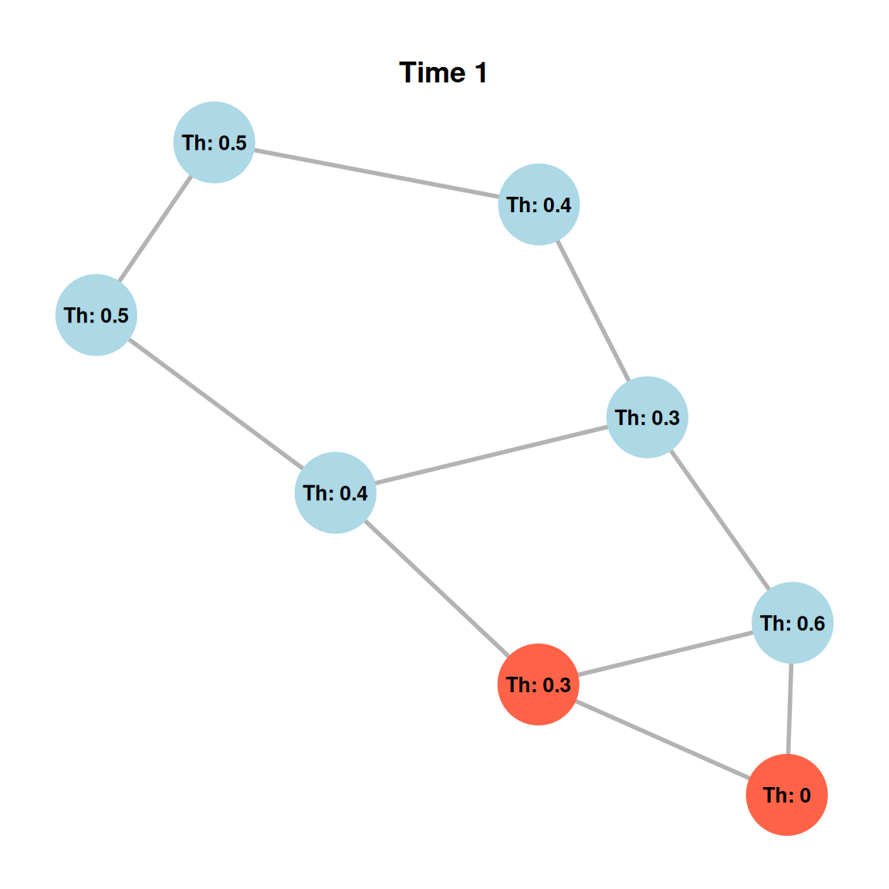
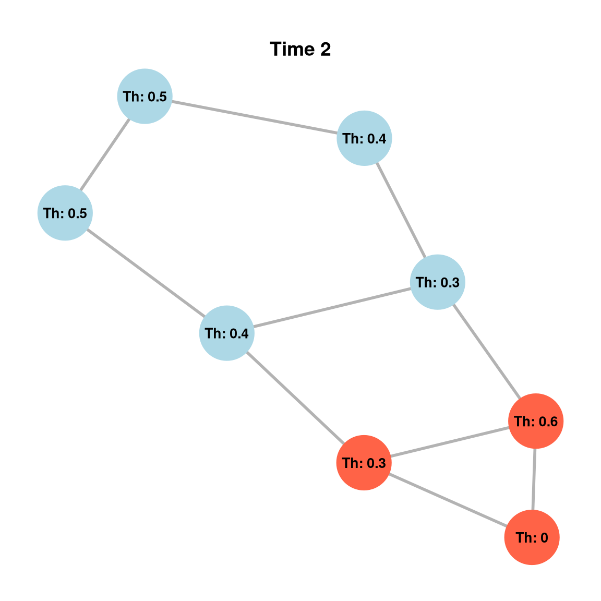
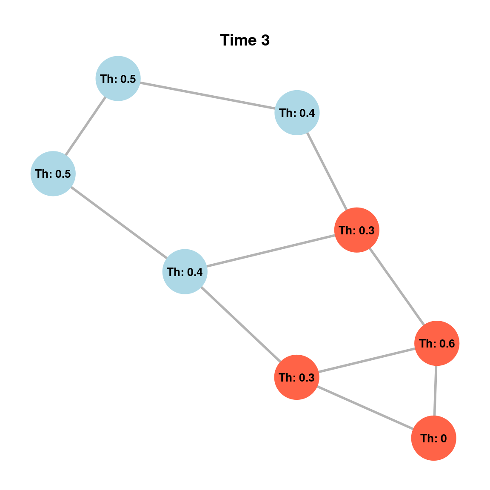
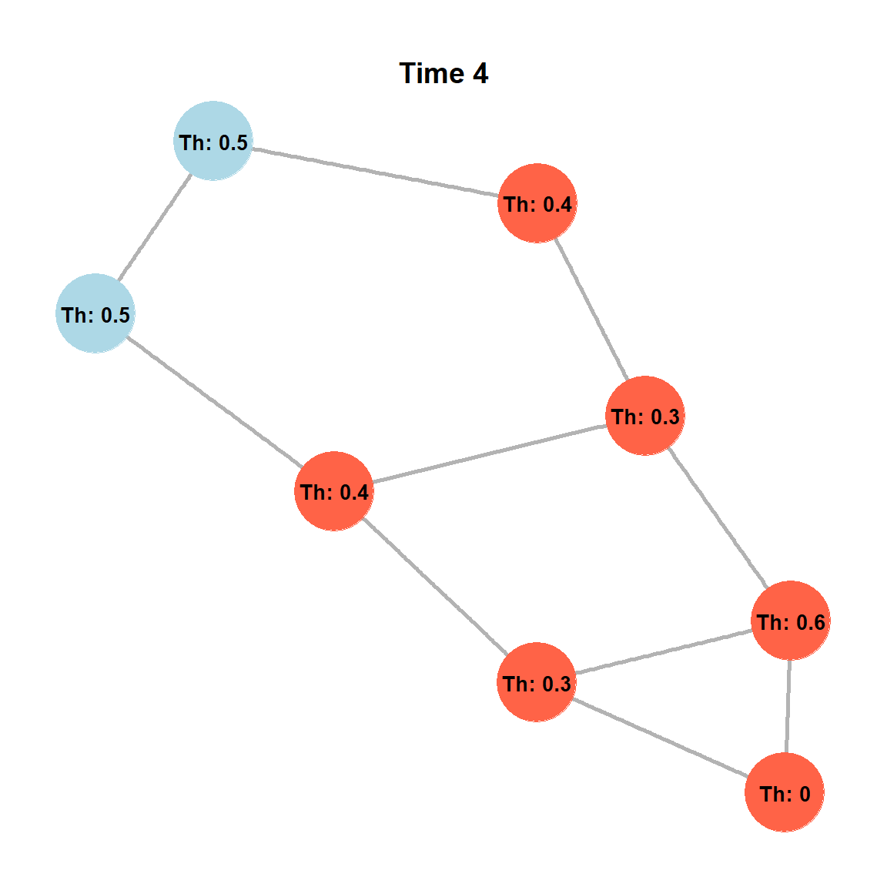
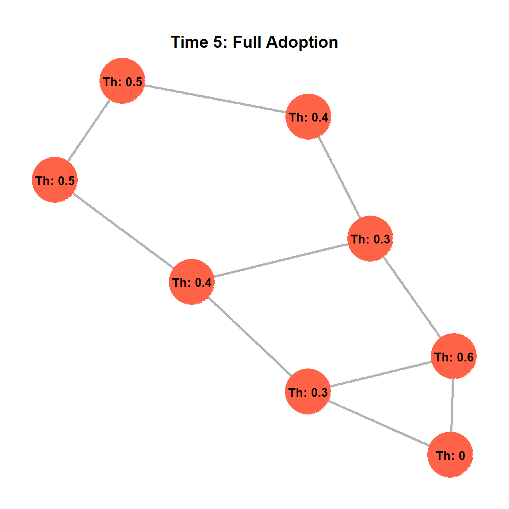
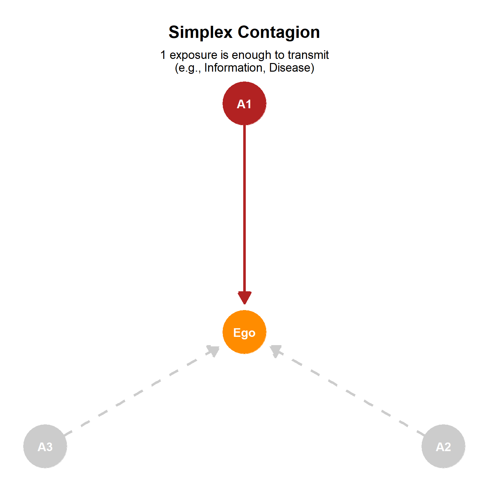
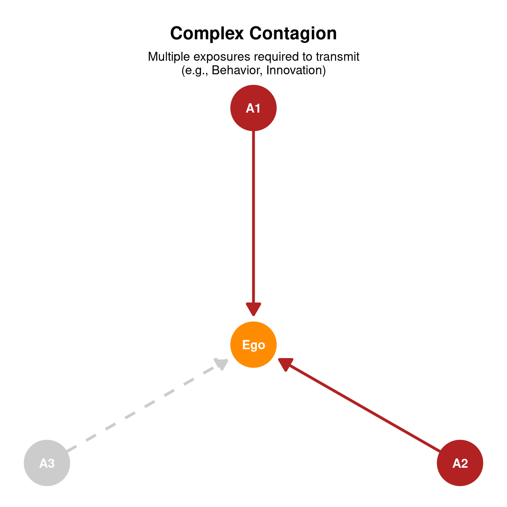

42 The Diffusion of Innovations
42.1 Definition of Diffusion
Diffusion refers to the spread of objects, ideas, information, concepts, fashions, tastes, or practices within a social network. The diffusion process typically follows an S-shaped pattern of cumulative adoptions, characterized by initial slow uptake, rapid spread, and a final slow saturation phase.
42.2 Components of Diffusion
The diffusion process has five key components:
- Innovation: The object that diffuses, such as a new technology, a piece of information, a behavior, or a social movement. For instance, the diffusion of a new smartphone model, a viral meme, or a protest movement like Black Lives Matter.
- Actors: The people or groups that either adopt or fail to adopt the innovation. Actors could be individuals in a social network, organizations, or even entire communities. For instance, in the diffusion of a new technology, actors could be consumers, while in the diffusion of a social movement, actors could be potential protest participants.
- Flow: The movement of the innovation from a source actor to an adopting actor. The flow could be the transmission of information through a social network, the spread of a disease, or the recruitment process in a protest movement. For instance, the flow of a new technology might occur through word-of-mouth recommendations, while the flow of a social movement might happen through social media sharing and in-person recruitment.
- Mechanism: The underlying process that links sources and adopters, such as imitation, physical contact, proximity, influence, or comparison. Imitation occurs when you adopt a behavior after observing others, while influence might involve social pressure to conform to a new norm. Comparison involves adopting an innovation to maintain status or competitiveness relative to similarly positioned individuals in a network.
- Outcome: The end state of the adopting actor after the diffusion process, such as opinion change, conversion, participation, or infection. The outcome of adopting a new technology might be increased productivity, while participating in a protest might change your political attitudes. The outcome can be positive (e.g., adopting a beneficial health behavior) or negative (e.g., adopting a harmful fad).
42.3 Why Do Things Diffuse?
Before examining specific models, it is helpful to understand the underlying factors that drive diffusion. Generally, three main factors account for why things spread:
- Characteristics of the object being diffused: Innovations that are familiar, highly beneficial, low-risk, and offer a strong cost/benefit ratio tend to diffuse more easily. For example, a new smartphone with clear advantages over existing models (e.g., better battery life, improved camera) is more likely to diffuse quickly than a product with marginal improvements. Conversely, innovations that are complex, costly, or risky may face barriers to diffusion. For instance, a new medical treatment with significant side effects may diffuse more slowly than a safer alternative.
- Characteristics of the source and adopter: Diffusion depends heavily on who is transmitting and who is adopting. You are generally more likely to adopt an innovation from a high-status source, or from someone you perceive as similar to yourself. For example, a new fashion trend may diffuse more rapidly if it is endorsed by a popular celebrity (high-status source) or if it is adopted by your close friends (similarity). Conversely, you may be less likely to adopt an innovation from a source you distrust or perceive as different from you. For instance, a new political ideology may struggle to diffuse if it is associated with a polarizing figure or group that you do not identify with.
- Environmental Context: The broader context matters, including geographic or social proximity, shared social foci (like workplaces or clubs), and the overall structure of the social network. For example, a new technology may diffuse more rapidly in a densely connected urban area than in a rural area with fewer social connections. Similarly, a social movement may gain traction more quickly in a community with strong social ties and shared interests than in a fragmented community.
42.5 The S-Curve Model
The S-curve model of diffusion is a widely recognized pattern illustrating how new objects, ideas, information, or practices spread within a social network over time. It depicts cumulative adoptions following a distinctive S-shape.
The S-curve is characterized by three main phases:
- Initial Slow Uptake: At the beginning, the rate of adoption is slow, representing a period where only a small segment of the population embraces the innovation. Early adopters or innovators may be the first to adopt, while the majority of the population remains hesitant or unaware of the innovation.
- Rapid Spread: Following the initial slow phase, there is a period of rapid adoption where the innovation quickly gains traction and spreads throughout the population. The number of new adopters per unit of time peaks during this “take off” period, indicating accelerated diffusion. For example, the adoption of cellphones in the late 1990s and early 2000s followed this rapid spread phase, as more and more people adopted the technology after it became more accessible and affordable.
- Final Slow Saturation: As the innovation approaches widespread adoption, the rate of new adoptions decelerates, eventually reaching a saturation point where most of the potential adopters have integrated the innovation. For example, the adoption of electricity in households eventually reached a saturation point where nearly all households had access, leading to a slowdown in new adoptions.

42.5.1 The Tipping Point
The “tipping point” for an innovation, the critical juncture where it shifts from slow growth to rapid adoption, typically occurs after the early adopters and before the early majority fully engage. Innovations that fail to reach this tipping point often die out. For example, many new products or technologies are introduced to the market but fail to gain enough traction among early adopters (ask an older person what Betamax is), leading to their eventual failure. In contrast, innovations that successfully reach the tipping point can experience exponential growth and widespread adoption.
Historically, many innovations have followed this S-shaped pattern. Examples include the spread of Hybrid Seed Corn in two Iowa communities from the late 1920s to the mid-1940s. More broadly, the S-curve is observed in the adoption of various household technologies over time, such as electricity, telephones, automobiles, radio, color TV, air conditioning, computers, cellphones, VCRs, and the internet. Social movements and protests (such as the BLM protests of 2020 and 2021) also exhibit S-curve diffusion, with an initial long uptake period followed by rapid mobilization leading to rapid spread, and then saturation as the protest cycle winds down.
42.6 Global Threshold Models
The Global Threshold Model, proposed by Granovetter and Soong (1983), posits that everyone in a social system has a “threshold” for adopting an innovation or behavior. Your threshold, denoted as \(q(i)\), represents the proportion of other people in the population who must have already adopted the innovation before you will adopt it. This value is always between zero and one (\(0 < q(i) < 1\)). You will adopt the innovation when the observed proportion of people (\(p\)) who have already adopted it reaches or exceeds your personal threshold (\(p = q(i)\)).
For example, if you have a threshold of \(q(i) = 0.25\), you will adopt the innovation when at least 25% of the population has already adopted it. Someone else with a threshold of \(q(i) = 0.75\) will only adopt when at least 75% of the population has done so.
A key assumption of this model is that you know the actual proportion of adopters across the entire population (meaning you have global information about the diffusion process), which may not always be realistic. This model works best for behaviors that are public and easily observable, ensuring people have a good idea of what everyone else is doing.
Traditional and social media facilitate diffusion processes suited for this model, as they provide you with broad information about the overall adoption of an innovation. For instance, when a new technology or social movement gains significant attention online, you can easily observe the total proportion of adopters and may be influenced to adopt based on your personal threshold.
42.6.1 Explaining the S-Shaped Diffusion Curve
The Global Threshold Model can effectively explain the typical S-shaped pattern of cumulative adoptions observed in diffusion processes. This S-curve is characterized by:
- Initial slow uptake: This occurs because only a few individuals with very low \(q\) values (low thresholds) adopt early on.
- Rapid spread: As more people adopt, the proportion of adopters (\(p\)) increases, reaching the thresholds of individuals with middle \(q\) values. Since many people tend to have moderate thresholds (forming a “bell curve” distribution of \(q\) values), this leads to a rapid increase in adoption rates.
- Final slow saturation: Eventually, only individuals with high \(q\) values (high thresholds) remain. As the adoption rate slows, it takes longer for the overall proportion of adopters to reach these high thresholds, leading to a flattening of the S-curve as saturation is approached.
The shape of the distribution of these individual thresholds (\(q\) values) within a population is critical in determining whether an innovation achieves widespread diffusion. If the distribution of q values is skewed towards “risk-averse late adopters” (i.e., many people have high thresholds), full diffusion is less likely to occur. Conversely, if the distribution is skewed towards “high-risk early adopters” (i.e., many people have low thresholds), diffusion is more likely to be successful.
The dynamics of protest recruitment often follow an S-shaped diffusion curve, which can be understood through the Global Threshold Model. For instance, a study on protest recruitment shows an initial long uptake period with a low proportion of adopters. Then, a “big mobilization” event occurs, which helps to recruit individuals with higher thresholds, leading to a rapid spread of participation. This implies that the initial slow uptake consists of individuals with low q values, while the rapid spread involves individuals whose thresholds are met by the increasing visible participation in the protest movement.
42.7 Rogers’ and Valente’s Classification of Adopters
Roger’s and Valente’s classifications provide different but complementary frameworks for understanding how you might adopt innovations within a social system.
42.7.1 Roger’s Classification of Adopters
Everett Rogers’ classification categorizes people into five groups based on their innovativeness and the timing of their adoption of a new idea or product. This model aligns closely with the S-shaped diffusion curve of cumulative adoptions over time. The categories are defined by their time-of-adoption relative to the average, representing distinct segments of the population:
- Innovators (2.5%): If you are an innovator, you are venturesome and among the very first to adopt an innovation. Your time-of-adoption is greater than one standard deviation earlier than the average.
- Early Adopters (13.5%): Considered opinion leaders, early adopters embrace the innovation just after the innovators. If you fall into this group, you play a crucial role in influencing the early majority. Your time-of-adoption is still more than one standard deviation earlier than average.
- Early Majority (34%): You fall into the early majority if you adopt the innovation just before the average member of the social system. Your time-of-adoption is within one standard deviation earlier than the average.
- Late Majority (34%): This group adopts the innovation after the average member of the system. If you are in the late majority, you tend to be more skeptical and cautious about new ideas. Your time-of-adoption is within one standard deviation later than the average.
- Laggards (16%): As the last to adopt, laggards are often traditional, risk-averse, and may be isolated within the social system. If you are a laggard, your adoption occurs later than one standard deviation from the average.
Roger’s classification relates to the idea of the tipping point (sometimes referred to as “the chasm” in commercial contexts), which happens around the time after the early adopters have adopted but before the full engagement of the early majority. Innovations that fail to reach this tipping point often do not achieve widespread diffusion and die out.

42.7.2 Valente’s Classification of Adopters (Network Threshold Model)
Thomas Valente’s Network Threshold Model revisits and refines Roger’s classification by incorporating the idea of individual thresholds for adoption within a network context. This model acknowledges that individuals adopt an innovation when the proportion of their direct contacts who have already adopted reaches a certain personal threshold.
Unlike Granovetter’s global threshold model, which assumes individuals know the proportion of adopters in the whole population, Valente’s network threshold model is more realistic as it is based on an individual’s local network information.
In Valente’s Network Threshold Model, each person (\(i\)) has an exposure level, \(e(i)\), which is defined as the proportion of their friends who have adopted the innovation. A person (ego) adopts the innovation when this proportion of adopted friends (\(e(i)\)) equals or exceeds their personal threshold (\(q(i)\)).
Let’s illustrate with an example: Imagine Person 1 has a threshold (\(q\)) of \(0.25\). This means Person 1 needs at least 25% of their friends to adopt before they adopt. You have an ego-network size of three.
- Time 1: If none of Person 1’s friends have adopted (0% adoption among friends), Person 1 does not adopt.
- Time 2: If one friend adopts, and this constitutes, for example, 33% of their friends, then 33% (0.33) is greater than or equal to their 0.25 threshold. Thus, Person 1 adopts.
Now consider Person 2 with a higher threshold (\(q\)) of \(0.75\). This means Person 2 needs at least 75% of their friends to adopt before they adopt. You have four alters in your ego-network.
- Time 1 & 2: Even if one or two friends adopt (e.g., 25% or 50% of friends), this proportion is below Person 2’s 0.75 threshold, so they do not adopt.
- Time 3: If three friends adopt, and this constitutes 75% of their friends, then 75% (0.75) is equal to their 0.75 threshold. Thus, Person 2 adopts.






Valente’s model categorizes adopters based on two dimensions of their threshold: their Whole Network Threshold (their general receptiveness to adoption across the entire system) and their Personal Network Threshold (how many of their direct contacts need to adopt before they do). This creates a two-by-two matrix, yielding four types of adopters:
| Whole Network Threshold: Low | Whole Network Threshold: High | |
|---|---|---|
| Personal Network Threshold: Low | True Innovators (Influentials) | Isolates |
| Personal Network Threshold: High | Connected Bandwagon | Resistant Rearguard |
- True Innovators (Influentials): If you fall into this category, you have a Low Personal Network Threshold and a Low Whole Network Threshold. You are among the first to adopt because you require little external validation from either your direct contacts or the broader system. True innovators are often “opinion leaders” who influence others and are typically highly visible and well-connected.
- Isolates: If you are an isolate, you have a Low Personal Network Threshold but a High Whole Network Threshold. Despite being easily influenced by your immediate contacts, you may be isolated from the broader network, limiting your exposure to an innovation until it reaches very high saturation system-wide.
- Connected Bandwagon: You belong to the connected bandwagon if you have a High Personal Network Threshold but a Low Whole Network Threshold. You require a significant proportion of your direct contacts to adopt before you do, but you are generally open to the innovation when it becomes prevalent in your immediate social circle. You are likely to join a trend once it gains momentum within your connections.
- Resistant Rearguard: You are part of the resistant rearguard if you have both a High Personal Network Threshold and a High Whole Network Threshold. You are highly resistant to adopting, requiring strong and widespread adoption among both your direct contacts and the system as a whole before you consider the innovation. This group largely corresponds to the “laggards” in Roger’s classification.
Valente’s model also provides insights into the Local/Cosmopolitan split in diffusion. Cosmopolitan innovators, who tend to be early adopters relative to the system and have very low thresholds relative to their network, often adopt from media or weak ties. In contrast, late adopters often rely on strong ties or friends for their adoption decisions. The network threshold model is particularly relevant for modelling diffusion that happens via complex contagion, which involves innovations entailing risk, social ostracism, or potential resource loss, as these require higher thresholds and often exposure to multiple sources or strong ties for you to adopt.
42.8 Simplex versus Complex Contagion
Simplex and complex contagion represent two distinct mechanisms by which objects, ideas, information, fashions, tastes, or practices spread through a social network (Centola and Macy 2007). The primary difference lies in the threshold for adoption and the nature of social reinforcement required for an individual to adopt an innovation.


42.8.1 Simplex Contagion
Simplex contagion refers to the diffusion of innovations or behaviors that require only a single exposure or a low threshold for adoption. These are typically items or information that carry low risk or cost, meaning a single instance of exposure is sufficient for you to adopt or transmit it.
Because you have a low internal barrier to adoption in these cases, you do not need much persuasion or multiple endorsements. Instead, exposure to just one adopter is often enough to trigger adoption. This process typically involves “simple” information that is easy to understand and act upon without significant implications.
Simple facts, news, or gossip often spread as simplex contagion. For example, learning “Who’s hiring?” or “What’s the best messaging app?” typically only requires one reliable source. Beyond social information, biological contagions like a disease can also spread from a single point of contact.
In terms of network structure, simplex contagion spreads efficiently through weak ties. Weak ties are valuable because they act as “bridges” to diverse and otherwise disconnected parts of the social structure, providing access to novel information that might not be available within your immediate strong-tie network. While strong ties involve frequent interaction, weak ties offer a broader reach and access to non-redundant information.
42.8.2 Complex Contagion
Complex contagion, in contrast, involves the diffusion of innovations or behaviors that entail higher thresholds for adoption, often requiring exposure to multiple sources or repeated reinforcement. Because these innovations typically involve some form of risk, social ostracism, or potential loss of resources, you are likely to be more cautious about adopting them.
With a higher internal barrier to adoption due to these perceived risks or costs, adoption often necessitates seeing multiple friends or contacts adopt, or receiving reinforcement from several sources. This multiple-source requirement provides validation, reduces perceived risk, and signals legitimacy. Consequently, complex contagion often involves interdependent information that requires greater trust and intimacy for effective transmission and adoption.
We can see this play out in various high-stakes scenarios. Joining a protest or a high-risk social movement, for example, often requires multiple trusted contacts to participate alongside you. Similarly, a profound personal change like religious conversion is rarely influenced by a single casual encounter; it usually requires consistent reinforcement from multiple people within your social circle. Other life-altering choices, such as the decision to migrate, come with many uncertainties and typically require validation and support from multiple social ties. Even adopting complex knowledge—like learning how to do network analysis in a programming language (e.g., R)—is better transmitted through higher bandwidth ties that provide the necessary trust and depth of interaction.
Complex contagion typically spreads more effectively through strong ties and within cliques (densely connected subgroups). While weak ties are good for novel information, they are less effective for complex contagion because they often connect infrequently and may not provide the sustained or multiple exposures necessary for adoption when the stakes are high. Strong ties provide the redundancy, trust, and frequent interaction needed to overcome the higher thresholds associated with complex behaviors.
| Feature | Simplex Contagion | Complex Contagion |
|---|---|---|
| Threshold | Low; single exposure often sufficient | High; requires exposure to multiple sources |
| Risk/Cost | Low risk/cost | High risk, social ostracism, resource loss |
| Primary Ties | Weak ties (bridges) | Strong ties (cliques) |
| Information Type | Simple, novel information | Complex, interdependent information |
| Diffusion Speed | Can spread faster via weak ties | Can spread faster via cliques and strong ties |
Table Table tbl-contagion summarizes the key features of the simplex versus complex contagion processes.
The concepts of simplex and complex contagion are closely related to threshold models of diffusion. Granovetter’s Global Threshold Model assumes individuals know the proportion of adopters in the whole population, which might be less realistic for complex contagions. Valente’s Network Threshold Model, on the other hand, is more appropriate for complex contagion as it posits that individuals adopt when a certain proportion of their direct contacts have adopted, reflecting the need for local validation and multiple exposures inherent in complex contagion.
42.4 Social Network Models of Diffusion
Researchers have developed several models to explain how innovations spread through social networks. While we cover Threshold Models and Complex Contagion later in this chapter, three foundational models focus on the structure of the network itself:
42.4.1 Diffusion via Cohesion
The direct cohesion model is the simplest network model of diffusion. It presumes that innovations “travel” directly via social network links. In this model, the focus is on how patterns of direct connectivity help or hinder the spread of an innovation. The primary mechanism here is imitation, often driven by a similarity heuristic: “I adopt the innovations that people like me adopt” (homophily).
Another mechanism is pure contagion, where an innovation spreads much like a virus. In this case, the more direct connections you have to adopters, the more likely you are to adopt. For example, if several of your close friends adopt a new social media platform, you may be more likely to join it as well due to the influence of your direct connections.
42.4.1.1 The Medical Innovation Study
A classic example of diffusion via cohesion is the 1957 study by Coleman, Katz, and Menzel on the adoption of a new drug (pseudonym “gammanym”) by doctors. Researchers mapped the social structure of doctors (asking who they turn to for advice, who they discuss cases with, and who their friends are) and merged it with objective behavioral data (pharmacy prescription records).
They found a distinct temporal pattern: - Months 1-2: Professional ties were most effective. Doctors relied on their professional advisors first. - Months 3-4: Friendship ties took over. Influence spread through friendship networks for those who valued social ties over professional advisors. - Months 4-5: The network finally reached less integrated, “isolated” doctors. - Months 6+: Network exhaustion. Late adopters acted independently of the social network (relying instead on ads or salesmen).
42.4.2 Two-Step Models of Diffusion
The two-step model posits that innovations diffuse via opinion leaders (or “influencers”). Instead of everyone adopting directly from the original source, potential adopters look up to opinion leaders to see what innovations they should adopt. For example, a new fashion trend may first be adopted by a few influential celebrities or social media influencers, and then the general public follows their lead.
Opinion leaders are people who influence the opinions, attitudes, beliefs, motivations, and behaviors of others. They are typically highly visible “early” adopters (e.g., celebrities or social media influencers) who occupy powerful positions and are well-connected within the network. In network terms, they usually have high degree centrality (popular), eigenvector centrality (connected to other popular people), or betweenness centrality (acting as intermediaries between groups).
This model can be combined with the cohesion model: the innovation begins at a source, transfers to an opinion leader (step one), and then the opinion leader transfers it to adopters, where it further spreads via cohesion among the adopters (step two). For instance, a new technology might be introduced by a company (source), adopted by a popular tech blogger (opinion leader), and then spread through the blogger’s followers (adopters) via their social connections.
42.4.3 Diffusion via Positional Equivalence
Cohesion-based models assume that diffusion only happens between connected actors through direct influence. However, diffusion can also operate among disconnected actors through positional equivalence (indirect influence).
If you occupy a similar structural position to someone else in a network (even if you do not interact directly), you may experience similar social pressures or structural demands. The mechanism here is comparison: you compare yourself to similarly positioned people and adopt innovations to maintain your status or remain competitive. For example, if you are a manager in a company and see that other managers in similar companies are adopting a new software tool, you may feel pressure to adopt it as well to keep up with industry standards, even if you do not have direct contact with those other managers.